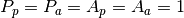
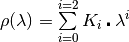
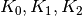
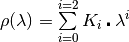
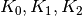
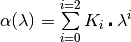
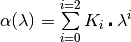
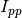
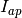

PolarizationCorrectionFredrikze dialog.
Table of Contents
Makes corrections for polarization efficiencies of the polarizer and analyzer in a reflectometry neutron spectrometer.
| Name | Direction | Type | Default | Description |
|---|---|---|---|---|
| InputWorkspace | Input | WorkspaceGroup | Mandatory | An input workspace to process. |
| PolarizationAnalysis | Input | string | PA | What Polarization mode will be used? PNR: Polarized Neutron Reflectivity mode PA: Full Polarization Analysis PNR-PA. Allowed values: [‘PA’, ‘PNR’] |
| Efficiencies | Input | MatrixWorkspace | Mandatory | A workspace containing the efficiency factors Pp, Ap, Rho and Alpha as histograms |
| OutputWorkspace | Output | WorkspaceGroup | Mandatory | An output workspace. |
Performs wavelength polarization correction on a TOF reflectometer spectrometer.
Algorithm is based on the the paper Fredrikze, H, et al. “Calibration of a polarized neutron reflectometer” Physica B 297 (2001).
Polarizer and Analyzer efficiencies are calculated and used to perform an intensity correction on the input workspace. The input workspace(s) are in units of wavelength inverse angstroms.
In the ideal case 
 where rho is bounded by, but inclusive of 0 and 1.
Since this ratio is wavelength dependent, rho is a polynomial, which is expressed as a function of wavelength. For example:
, can be provided as 
where rho is bounded by, but inclusive of 0 and 1.
Since this ratio is wavelength dependent, rho is a polynomial, which is expressed as a function of wavelength. For example:
, can be provided as 
 where alpha is bounded by, but inclusive of 0 and 1.
Since this ratio is wavelength dependent, alpha is a polynomial, which is expressed as a function of wavelength. For example:
, can be provided as
where alpha is bounded by, but inclusive of 0 and 1.
Since this ratio is wavelength dependent, alpha is a polynomial, which is expressed as a function of wavelength. For example:
, can be provided as
The output of this algorithm, as we can see in the table of properties, is a WorkspaceGroup. If the algorithm has been executed with “PA” as the Polarization mode then the resulting WorkspaceGroup will have 4 entries and should be in the format:
| Entry in group | Measurement |
|---|---|
| 1 |  |
| 2 |  |
| 3 |  |
| 4 |  |
Categories: Algorithm Index | Reflectometry
C++ source: PolarizationCorrectionFredrikze.cpp (last modified: 2019-01-18)
C++ header: PolarizationCorrectionFredrikze.h (last modified: 2018-10-05)
{kind=link}